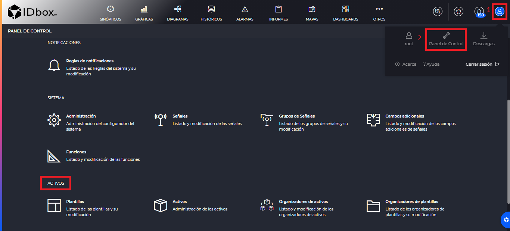
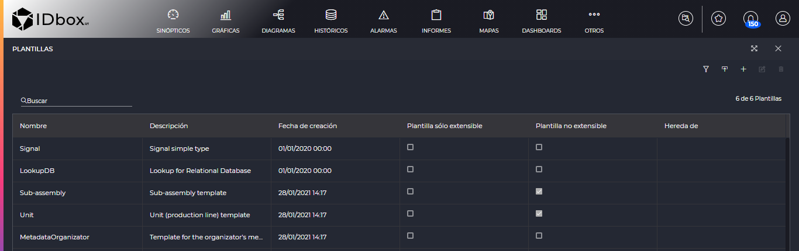
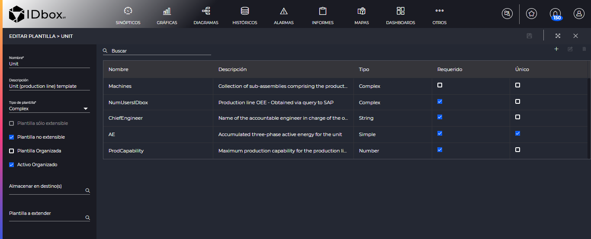
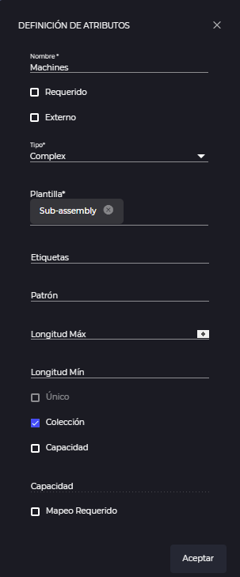
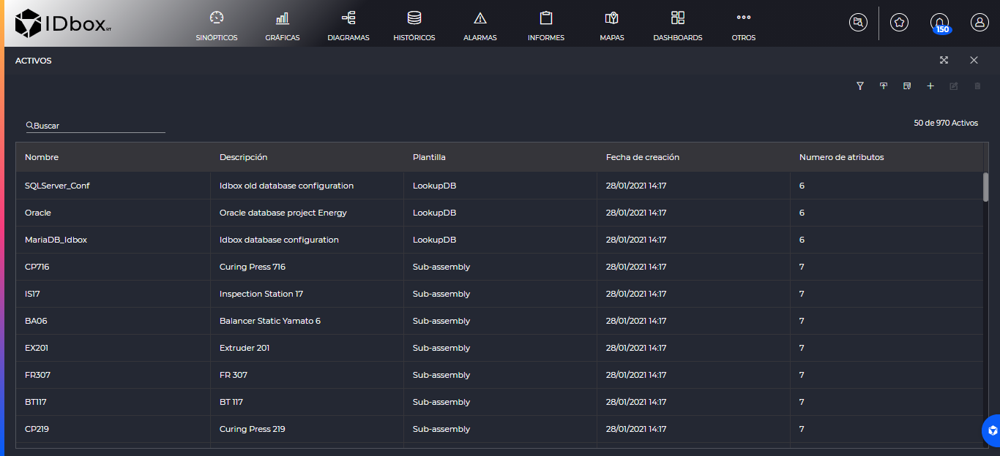
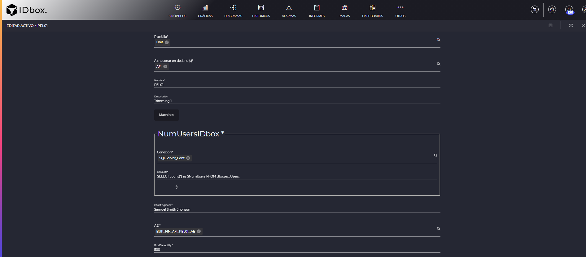
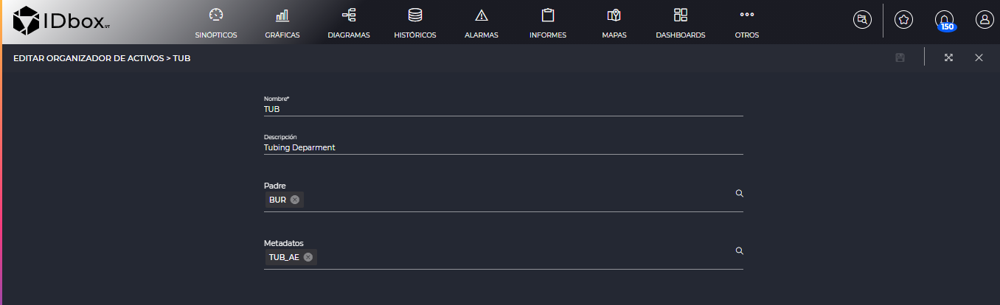

ACTIVOS
- 1 Introducción
- 2 Plantillas de activos
- 2.1 Definición de atributos
- 3 Activos
- 4 Organizadores de plantillas
- 5 Organizadores de activos
- 6 Carga masiva
1. Introducción
En el apartado de “Activos” del panel de control se encuentran las herramientas para gestionar el inventario de activos. Desde aquí podrá dar de alta plantillas de activos, activos, organizadores de plantillas y organizadores de activos. De esta manera podemos gestionar todas las operaciones del inventario de activos de IDbox.
El acceso al este apartado se realiza desde el panel de control.

En cada sección nos encontraremos un listado con los elementos dados de alta en el bloque correspondiente.
En todas las secciones encontraremos a la izquierda un buscador y a la derecha entre las opciones encontraremos un botón de añadir , que nos permitirá añadir un elemento nuevo a esa sección. Además si seleccionamos un registro nos permitirá editarle mediante el botón de editar , o borrarle mediante el botón de eliminar .
2 Plantillas de activos
Según entramos a la sección nos encontraremos el listado con las plantillas de activos.

El botón de filtro , nos permitirá filtrar por la extensibilidad de la plantilla (sólo sacar las extensibles, sólo las no extensibles, etc) y/o el tipo de la plantilla (“Complex”, “Lookup” o “Metadata”).
Además tenemos en botón de importar plantillas que se explica en la sección Carga masiva.
Una vez añadamos o editemos una plantilla, entraremos en la sección de definición de la plantilla.

Una plantilla es una estructura de datos que definirá los atributos que tiene un activo. Podemos distinguir los siguientes campos:
- Nombre: Nombre que le daremos a la plantilla.
- Descripción: Descripción de la plantilla.
- Tipo de plantilla: Podrá ser de uno de los siguientes tipos
- Complex: Principalmente se utiliza para definir un activo real mediante propiedades (atributos). Puede tratarse de activos reales de la empresa, de la infraestructura, de las máquinas, etc. La plantilla Complex permite crear una jerarquía (relacionar activos padre con activos hijos).
- Metadata: Es la definición de una estructura de datos que cuando se definen esos datos se complementarán los datos de un organizador. Las plantillas metadata solo se pueden asociar a organizadores.
- Lookup: No nos aparecerá para seleccionar en este combo porque no pueden ser creadas por el usuario. Es una estructura de datos que define los atributos necesarios para que el activo lookup que se da de alta en base a esta plantilla pueda realizar una conexión a un sistema externo al inventario IDbox. Se considera sistema externo al inventario IDbox: el backend del IDbox o un tercer sistema. Estás conexiones harán posible la ejecución de consultas definidas a nivel de un activo complex o de un activo metadata.
- Simple: No nos aparecerá para seleccionar en este combo porque no pueden ser creadas por el usuario. Un ejemplo sería la plantilla “Signal”, que indicará que ese campo contiene una referencia una señal de IDbox. Estas plantillas viene definidas con el sistema.
- Plantilla sólo extensible: Opción disponible para la plantilla tipo Complex. Marcarla hace posible que los atributos de esta plantilla se puedan heredar en otra plantilla. Las plantillas solo extensibles por sí solas no permiten crear activos, ya que ellas describen algo parcial o abstracto.
- Plantilla no extensible: Opción disponible para las plantillas tipo Complex. Si está marcada indica que ninguna otra plantilla puede heredar de ella. Una plantilla no extensible puede heredar los atributos definidos en una plantilla solo extensible. La plantilla no extensible permite crear activos.
- Plantilla organizada: Indica si es obligatorio guardar la plantilla en una jerarquía de carpetas conocida como organizador de plantillas. Marcar “Plantilla organizada” hará que el campo “Almacenar en destino(s)” sea obligatorio.
- Activo organizado – los activos que se darán de alta en base a esta plantilla tendrán el campo “Almacenar en destino(s)” marcado como obligatorio.
- Almacenar en destino(s): Se usa para indicar el organizador u organizadores en el que estará esta plantilla.
- Plantilla a extender: Permite importar, heredar, los atributos definidos en una “Plantilla sólo extensibles”. Estos atributos a heredar se mostrarán solo en el formulario de alta del activo.
En la parte central del formulario se mostrarán los atributos de la plantilla. Una plantilla que tenga algún activo no se podrá modificar. Podremos buscar entre los existentes mediante “Buscar”.
Podemos crear un atributo nuevo mediante el botón de . Seleccionando un atributo existente nos permitirá editarle mediante el botón de editar , o borrarle mediante el botón de eliminar .
2.1 Definición de atributos
Una vez editemos o añadamos un atributo, tendremos la siguiente pantalla para definir los atributos.

Los atributos se componen de los siguientes campos: * Nombre: Nombre del atributo que se mostrará cuando demos de alta un activo. * Requerido: Indica si el atributo será requerido a la hora de dar de alta el activo. * Externo: A nivel de inventario IDbox es un campo con carácter solo informativo. Se utiliza para dar un valor a la información, para saber que, lo que almacena este campo en el formulario de activos está en un sistema externo, no está en el inventario IDbox. * Tipo: Indica el tipo de dato que aceptará el atributo en el activo. Los siguiente tipos son posibles:
- String: permite caracteres de tipo texto (alfanumérico)
- Integer: permite solo números enteros
- Decimal: permite números decimales. Si el usuario introducirá un número entero, internamente se guardará como decimal.
- Date: permite datos en formato de fecha
- DateTime: permite datos en formatos fecha y hora
- Complex: Al seleccionar esta opción se mostrará el campo Plantilla donde se podrá elegir entre todas las plantillas dadas de alta de tipo Complex o Lookup. Seleccionando una plantilla Complex, se permitirá crear una jerarquía de activos padre - hijo. En el formulario de alta del activo padre, en el campo correspondiente a este atributo, se seleccionarán los activos hijos previamente creados. Seleccionando una plantilla Lookup, en el alta del activo en el campo correspondiente a este atributo se podrá seleccionar un activo lookup previamente dado de alta y definir la consulta a realizar.
- Simple: Al igual que el tipo Complex, en el formulario se mostrará el campo “Plantillas” que permitirá acceder a la plantilla simple Signal. Al seleccionar la plantilla “Signal” en el formulario Definición de atributos, el campo Externo se marcará automáticamente.
- Etiquetas : A nivel de atributo se puede definir una o varias etiquetas (tags). Un tag es una expresión que consiste en un texto escrito en minúsculas precedido por #(ejemplo: #capacidad). Los tags permitirán mostrar, en Explorador, el valor del atributo donde se han definido. Al hacer click en Etiquetas se abre el formulario “Introduzca o seleccione una etiqueta” previsto con un buscador en el cual ha de escribir el tag a asignar. Si el tag no está creado en la aplicación, pulsar Aceptar. Aceptando se creará el tag y se asociará al atributo que editamos. Si el tag existe, este se seleccionará del listado que devuelve el buscador. No se recomienda añadir tags a los atributos que tienen colección. Las etiquetas de estos atributos no pueden mostrar los valores de una colección.
- Patrón: Es la expresión regular que define el formato del dato a introducir en el campo correspondiente del activo (solo mayúsculas, solo letras, espacios, formato NIF, etc.)
- Valor por defecto: Marcando este check se podrá indicar en el campo con el mismo nombre el valor que se mostrará por defecto en el alta del activo. El formato de este valor dependerá del tipo del atributo (string, integer, decimal, date, datetime).
- Longitud Máx: Define el máximo de caracteres que se admiten para este atributo en el formulario del activo.
- Longitud Mín: Define el mínimo de caracteres que se admiten para este atributo en el formulario del activo.
- Único: Los activos, siempre y cuando sean de la misma plantilla no podrán repetir el mismo valor para el campo definido como único. La unicidad se aplica a cada una de las jerarquías de herencia; es por plantilla.
- Colección: Indica que en lugar de ser un valor simple, el activo tendrá una colección de valores del tipo indicado en el campo “Tipo”. Si marcamos está opción se habilitarán los botones de “Capacidad” y “Mapeo Requerido”.
- Capacidad - define el número obligatorio de valores, elementos que tendrá la colección. Si no se indica ningún número en Capacidad la colección tendrá tantos valores, elementos cuantos el usuario necesite.
- Mapeo requerido - es un identificador para cada elemento de la colección. Este identificador se mostrará solo en el formulario del activo; no se mostrará al visualizar el activo en Explorador. Al marcar esta opción, nos aparecerá un listado a la derecha para que demos un identificador a cada uno de los valores. Se mostrará una fila por cada capacidad y podremos dar de alta más o eliminarlas mediante los botones de Añadir y eliminar . Además si introducimos un texto en “Autocompletar Mapeo”, nos autocompletará todos identificadores con el texto que hayamos puesto y un numérico autoincremental (e.g. con el texto "Señal “, nos escribirá “Señal 1”, Señal 2”, etc).
Guardaremos la plantilla al completo al pulsar sobre el botón de guardar de la barra de herramientas
3 Activos
Al entrar a esta sección encontraremos el listado de los activos del sistema.

Además tendremos el botón de filtro , que nos permitirá filtrar por el nombre del activo y/o el tipo de la plantilla (“Complex”, “Lookup” o “Metadata”).
Por otro lado tenemos los botones de importar activos y descargar plantillas que se explican en la sección Carga masiva.
Cuando editemos o creemos un activo entraremos en la pantalla de edición de un activo.

En esta pantalla tendremos un formulario que tendrá una parte común para todos los activos y después una parte que dependerá de lo que hayamos definido en la plantilla del activo. Cómo se verá cada campo está explicado en la sección de Plantillas de activos. Por ejemplo si tenemos un campo de tipo Integer definido en la plantilla, aquí nos aparecerá ese campo para introducir un número entero.
En el caso de la parte común, los campos son los siguientes: * Plantilla: Indica la plantilla mediante la cual se generará este formulario. Los atributos definidos en esa plantilla son los que veremos aquí. * Almacenar en destino(s): Indica los organizadores en los que estará el activo. * Nombre: El nombre del activo. * Descripción: Una descripción para el activo.
Cabe destacar la visualización de un campo de tipo Lookup. En el caso de la imagen superior, el campo “NumUsersIDbox” es de tipo lookup. En él vemos la selección de un activo de tipo Lookup en el campo “Conexión”, la consulta que se realizará en el campo “Consulta” y después un botón de ejecutar en el que ejecutaremos la “Consulta” contra el sistema externo definido en la “Conexión” y nos mostrará el valor resultante.
En el caso de que los atributos no sean simples y sean de tipo “Colección”, nos aparecerá un botón que abrirá otra ventana para introducir esos valores. En el ejemplo en atributo de la captura superior, “Machines” es de tipo colección.
El activo se guardará una vez que pulsemos en el botón de guardar de la barra de herramientas
4 Organizadores de plantillas
Aquí encontraremos el listado de organizadores de plantillas.

Al editar o dar de alta un organizador, entraremos en la siguiente pantalla.

Los campos son los siguientes: * Nombre: Nombre del organizador. * Descripción: Descripción del organizador. * Padre: Organizador que en la jerarquía, será el padre de este. * Metadatos: Se utiliza para seleccionar una plantilla metadata con el propósito de mostrar información a nivel de organizador.
Pulsando sobre el botón de guardar de la barra de herramientas , guardaremos el organizador de plantillas.
5 Organizadores de activos
Lo primero que encontraremos será el listado de organizadores de activos.

Si añadimos o editamos uno entraremos en la pantalla de edición de un organizador de activos.

Los campos son los siguientes: * Nombre: Nombre del organizador. * Descripción: Descripción del organizador. * Padre: Organizador que en la jerarquía, será el padre de este. * Metadatos: Se utiliza para seleccionar una plantilla metadata con el propósito de mostrar información a nivel de organizador.
Se guardará el organizador de activos cuando pulsemos en el botón de guardar de la barra de herramientas
6 Carga masiva
Modos de carga masiva:
- Importación de excel con plantillas: Importa las plantillas del sistema de inventario desde el fichero excel con la definición. Lo encontraremos en el botón de importación de la sección Plantillas de activos
- Exportación de plantilla para activos: Descarga el formato de la excel que se tiene que seguir para insertar activos. Este botón se encuentra en la sección Activos
- Importación de excel con activos: Una vez generado el fichero excel con los activos del sistema se importa al sistema. Encontraremos el botón en la sección de Activos